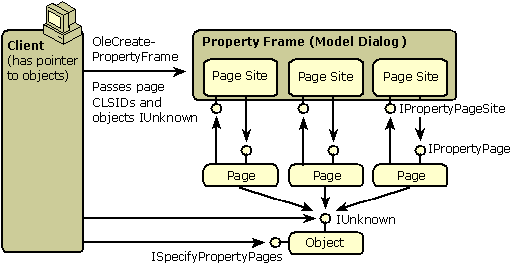

An object's properties are exposed to clients the same as methods through either COM interfaces or the object's IDispatch implementation, allowing properties to be changed by programs calling these methods. The OLE technology of property pages provides the means to build a user interface for an object's properties according to Windows user interface standards. Thus, the properties are exposed to end users. An object's property sheet is a tabbed-dialog where each tab corresponds to a specific property page. The OLE model for working with property pages consists of these features:
These features are illustrated in the following diagram:

These interfaces are defined as follows:
interface ISpecifyPropertyPages : IUnknown
{
HRESULT GetPages([out] CAUUID *pPages);
};
interface IPropertyPage : IUnknown
{
HRESULT SetPageSite([in] IPropertyPageSite *pPageSite);
HRESULT Activate([in] HWND hWndParent, [in] LPCRECT prc
, [in] BOOL bModal);
HRESULT Deactivate(void);
HRESULT GetPageInfo([out] PROPPAGEINFO *pPageInfo);
HRESULT SetObjects([in] ULONG cObjects
, [in, max_is(cObjects)] IUnknown **ppunk);
HRESULT Show([in] UINT nCmdShow);
HRESULT Move([in] LPCRECT prc);
HRESULT IsPageDirty(void);
HRESULT Apply(void);
HRESULT Help([in] LPCOLESTR pszHelpDir);
HRESULT TranslateAccelerator([in] LPMSG pMsg);
}
interface IPropertyPageSite : IUnknown
{
HRESULT OnStatusChange([in] DWORD dwFlags);
HRESULT GetLocaleID([out] LCID *pLocaleID);
HRESULT GetPageContainer([out] IUnknown **ppUnk);
HRESULT TranslateAccelerator([in] LPMSG pMsg);
}
The ISpecifyPropertyPages::GetPages method returns a counted array of UUID (GUID) values each of which describe the CLSID of a property page that the object would like displayed. Whoever invokes the property sheet with OleCreatePropertyFrame or OleCreatePropertyFrameIndirect passes this array to the function. Note that if the caller wishes to display property pages for multiple objects, it must only pass the intersection of the CLSID lists of all the objects to these functions. In other words, the caller must only invoke property pages that are common to all objects.
In addition, the caller passes the IUnknown pointers to the affected objects to the API functions as well. Both API functions create a property frame dialog and instantiate a page site with IPropertyPageSite for each page it will load. Through this interface a property page can:
The property frame instantiates each property page object and obtain each page's IPropertyPage interface. Through this interface the frame informs the page of its page site (SetPageSite), retrieves page dimensions and strings (GetPageInfo), passes the interface pointers to the affected objects (SetObjects), tells the page when to create and destroy its controls (Activate and Deactivate), instructs the page to show or reposition itself (Show and Move), instructs the page to apply its current values to the affected objects (Apply), checks on the page's dirty status (IsPageDirty), invokes help (Help), and passes keystrokes to the page (TranslateAccelerator).
An object can also support per-property browsing, which provides:
An object can choose to support (2) without supporting (1), such as when the object has no property sheet.
The IPropertyPage2 and IPerPropertyBrowsing interfaces are defined as follows:
interface IPerPropertyBrowsing : IUnknown
{
HRESULT GetDisplayString([in] DISPID dispID, [out] BSTR *pbstr);
HRESULT MapPropertyToPage([in] DISPID dispID, [out] CLSID *pclsid);
HRESULT GetPredefinedStrings([in] DISPID dispID, [out] CALPOLESTR *pcaStringsOut, [out] CADWORD *pcaCookiesOut);
HRESULT GetPredefinedValue([in] DISPID dispID, [in] DWORD dwCookie, [out] VARIANT *pvarOut);
}
interface IPropertyPage2 : IPropertyPage
{
HRESULT EditProperty([in] DISPID dispID);
}
To specify its support for such capabilities, the object implements IPerPropertyBrowsing. Through this interface, the caller can request the information necessary to achieve the browsing, such as predefined strings (GetPredefinedStrings) and values (GetPredefinedValue) as well as a display string for a given property (GetDisplayString).
In addition, the client can obtain the CLSID of the property page that allows the user to edit a given property identified with a DISPID (MapPropertyToPage). The client then instructs the property frame to activate that page initially by passing the CLSID and the DISPID to OleCreatePropertyFrameIndirect. The frame activates that page first and passes the DISPID to the page through IPropertyPage2::EditProperty. The page then sets the focus to that property's editing field. In this way, a client can jump from a property name in its own user interface to the property page that can manipulate that property.
Property Pages and Property Sheets
Â
Â